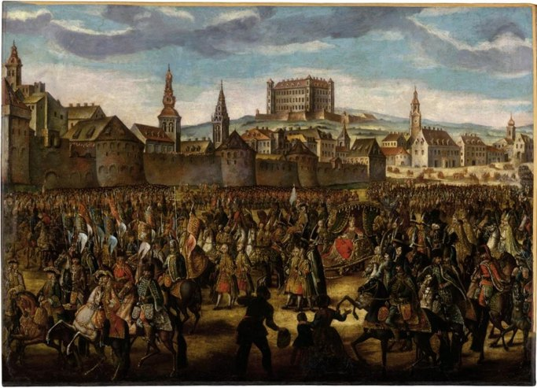
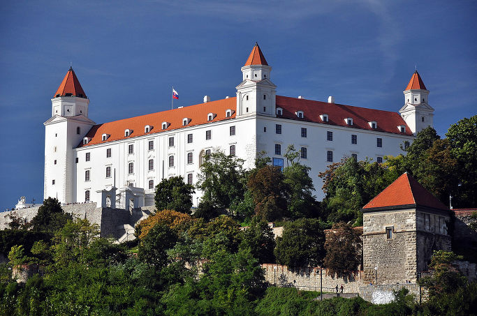
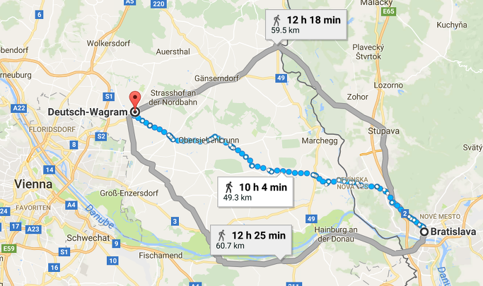
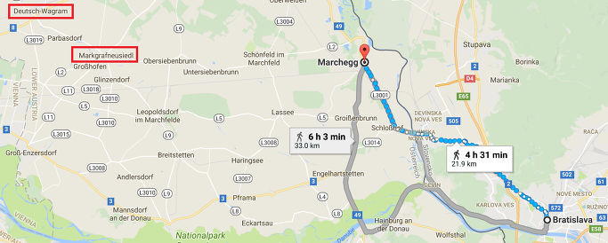
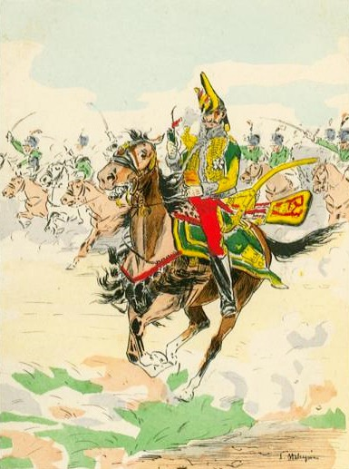

바그람 전투 (제17편) - 요한이 왔다 !
게시: 2017-10-21T22:28:29+09:00
나폴레옹은 우익에서의 다부의 성공적인 진격을 보면서 '막도날의 기둥'만을 출격시킨 것이 아니었습니다. 막도날의 기둥이 웅장한 모습으로 적과 충돌한 뒤, 그 뒤를 이어 우디노와 외젠 등 다른 부대들도 일제히 전면 공세에 들어갔습니다. 그리고 루스바흐 고지 위에서 이 모든 상황을 바라보고 있던 카알 대공의 심정은 처참 그 자체였습니다. 막도날의 기둥이 오스트리아군의 방어진을 들이받고 혼전을 벌이고 있던 오후 2시경, 카알 대공은 다부의 공격에 의해 무너지고 있던 오스트리아군 좌익을 수습하기 위해 호헨촐레른의 오스트리아군 제2 군단과 함께 있었습니다. 그의 눈에는 전체 전선에 걸쳐 쇄도해오는 프랑스 그랑다르메의 모습 뿐만 아니라, 나폴레옹의 사령부가 있는 라스도르프(Raasdorf) 마을 인근에 여유있게 집결해있는 꽤 큼직한 예비 병력들의 모습이 들어왔습니다. 그것이 뜻하는 바는 자명했습니다. 카알 대공이 야심차게 준비했던 클레나우의 제6 군단의 아스페른-에슬링 공격이 실패했거나, 최소한 별 성과를 내지 못했다는 것이었지요. 클레나우의 공격이 성공했다면 지금 나폴레옹 사령부에 저렇게 많은 예비대가 남아 있을 턱이 없었으니까요.
그에 비해 오스트리아군에게는 더 이상 예비대가 없었으므로 해볼 수 있는 것이 없었습니다. 그렇게 패배가 분명해졌음에도 불구하고 카알 대공이 후퇴 명령을 내리지 않고 버텼던 것은 아직 한가지 실낱같은 희망이 남아 있었기 때문이었습니다. 바로 동생 요한 대공이 이끄는 오스트리아 내부군(Army of Inner Austria)이었습니다.
실제로 해가 서쪽 하늘로 기울던 오후 4시 30분 경, 요한 대공의 전위대를 구성하는 일단의 기병대가 마르크그라프노이지들 바로 동쪽인 운터지벤브룬(Untersiebenbrunn)에 나타났습니다. 이들의 눈 앞에 펼쳐진 모습은 혼란 그 자체였습니다. 인마가 일으키는 먼지와 총포의 화약 연기로 인해 사방이 뿌옇게 흐려져 있었는데, 그 사이로 보이는 마르히펠트 평원에는 프랑스군이 거미새끼처럼 흩어져 도망치고 있었습니다. 이들이 공포에 질려 도망치는 이유는 단 하나, 바로 모두가 두려워하던 요한의 군대가 도착한 것을 목격하고 대경실색했기 때문이었습니다. 라스도르프의 나폴레옹의 사령부도 난데 없이 동쪽 평원에서 벌어지는 소란 소리에 발칵 뒤집혔습니다. 젊은 참모 장교들은 물론이고 나폴레옹 본인까지도 임시 사령부 밖으로 튀어나와 망원경을 들고 요한 대공의 병력을 포착하기 위해 두리번거렸습니다. 다 잡은 줄 알았던 이번 전투의 승리가 요한 대공의 도래로 인해 막판에 패배로 둔갑하는 것이었을까요 ?
아니라는 것을 다들 아실 겁니다. 전투 막판의 이 소동에는 꽤 긴 스토리가 있습니다.

(요한 대공이 주둔하고 있던 브라티슬라바는 윗 그림 속에서 보시는 것과 같이, 1741년 오스트리아의 여제 마리아 테레사가 즉위식을 올린 유서깊은 도시입니다. 저 그림 속의 성은 브라티슬라바 성, 독일어로 Pressburger Schloss라는 곳인데, 아래 사진처럼 오늘날까지 남아 있는 유서 깊은 건물입니다.)

(브라티슬라바 성의 오늘날의 모습입니다. 1809년, 요한 대공의 뒤를 추격한 외젠의 군대가 결국 이 성에 포격을 가하는 등 이 성은 프랑스군에게 많은 피해를 입었습니다. 특히 1811년, 이 성에서 부주의로 인한 화재 사고가 나는 바람에 이 성은 폐허가 되었지요. 지금의 이 모습은 제2차 세계대전 이후 중건한 것입니다.)
전투가 벌어지기 하루 전인 7월 4일 아침 7시경, 드디어 전투가 벌어질 것이라고 확신한 카알 대공은 서둘러 브라티슬라바(슬로바키아의 수도인 Bratislava, 독일어로는 프레스부르크 Pressburg)에 주둔하고 있던 요한 대공에게 오스트리아 내부군을 이끌고 서둘러 마르헤크(Marchegg)로 달려올 것을 지시했습니다. 특히 그는 상황이 급하므로 무거운 짐마차 등은 다 버려두고 최소한의 군장으로 강행군을 하라고 지시했지요. 마르헤크는 바그람으로부터 동쪽으로 대략 7시간 정도의 행군거리에 있는 마을이었고, 바그람으로부터 브라티슬라바는 사람이 (쉬지 않고) 걸어서 가도 10시간 정도면 닿는 거리였습니다. 카알 대공은 그 정도면 충분히 일찍 전령을 보낸 것이라고 생각했습니다. 카알 대공은 특별히 전령으로 제4 군단장 로젠베르크의 아들을 골라 보냈습니다. 그만큼 중요한 임무였기 때문입니다.

(요한 대공이 있던 브라티슬라바부터 도이치-바그람까지의 거리는 현대적 도로를 따라 걸을 때 약 10시간 거리입니다. 물론 이건 전혀 쉬지 않고 빈 몸으로 가볍게 걸을 때의 이야기지요.)
그러나 전쟁에서는 별의별 희한한 일이 다 벌어지기 마련입니다. 나폴레옹이 도나우 강을 넘던 7월 4일 밤 엄청난 폭풍우가 쏟아졌던 것을 기억하실 겁니다. 프랑스군은 그런 악천후에 대해 '잘 됐다 ! 오스트리아군이 모르는 사이에 건널 수 있게 되었다 !'라며 재빨리 수만 명이 불안한 부교를 건넜지요. 그러나 로젠베르크의 아들은 같은 폭풍우 속에서 길을 잃고 말았습니다. 결국 그날 저녁 무렵엔 도착할 것으로 기대했던 그 소환 명령은 카알 대공이 전령을 보낸지 무려 23시간 후인 7월 5일 아침 6시, 이미 나폴레옹의 대군이 마르히펠트 평원에 전개한 다음에야 요한 대공의 손에 들어갈 수 있었습니다.
문제가 여기서 그치는 것이 아니었습니다. 비에 흠뻑 젖은 초라한 몰골로 나타난 로젠베르크의 아들이 자신의 늦은 명령서 전달로 인해 초조해하는 것과는 딴판으로, 요한 대공은 그 급보를 받아들고도 반응이 무척이나 심드렁했습니다. 그가 보인 첫번째 반응은 '아니 뭐야, 뭐 브라티슬라바를 견제하고 있는 이탈리아 방면군 잔존부대를 공격하라더니...'라는 불평이었습니다. 실제로 카알 대공은 바로 전에 전달한 명령서에서 가만히 있지 말고 외젠이 남겨두고 떠난 이탈리아 방면군 잔존부대, 즉 엔가라우(Engerau)에 주둔한 세베롤리(Severoli) 장군을 공격하라고 지시한 바 있었고, 요한 대공은 지엄하신 형님의 명령을 집행할 준비를 하고 있었습니다. 바로 코 앞에 위치한 적을 습격하는 것과 먼 지역으로 행군하는 것은 분명히 준비할 것이 다르긴 했습니다. 하지만 그런 준비 변경이 하루 종일 걸릴 일은 분명히 아닐 것 같은데, 요한 대공의 부대가 드디어 그 무거운 엉덩이를 들고 진영 밖으로 걸어나간 것은 무려 19시간 후인 7월 6일 새벽 1시경이었습니다. 이건 도저히 납득이 가지 않을 정도의 느린 행동이었습니다.
하지만 요한 대공에게는 다 설명이 되는 일이었습니다. 세베롤리 장군을 공격하기 위해 도나우 강 여기저기에 배치시켜 놓았던 부대를 다시 다 불러들이고, 밤새 공격 대기를 기다리며 야전에서 대기한 병사들에게 행군용 배낭을 챙기게 하고, 긴 행군에 대비하여 병사들을 먹이고 하는 일에는 다 시간이 필요했습니다. 게다가, 자신의 부대가 백주대로에 보무도 당당하게 마르헤크로 출정하면 자신과 대치하고 있던 세베롤리가 그걸 목격하고는 재빨리 나폴레옹에게 전령을 보내 '요한이 움직이니 대비하십쇼'라고 알릴 것이 아니겠습니까 ? 그래서 그는 칠흑같은 어둠이 찾아든 새벽 1시까지 기다렸다가 살금살금 행군을 시작했던 것입니다. 하긴 그 덕분에, 나폴레옹은 감시를 붙여놓았다고 생각했던 요한 대공의 군대가 7월 6일 저녁 무렵 사전 통보도 없이 불쑥 나타나는 바람에 깜짝 놀라기는 했습니다.
그렇게 출발이 늦었다고 해도, 그렇게 만반의 준비를 갖추고 무거운 짐도 다 놓아둔 채 결연한 의지로 야간 행군을 했다면 7월 6일 오후 12시 경에는 마르크그라프노이지들에 도착하여 다부의 뒤통수를 칠 수 있었을 것입니다. 그러나 요한 대공 옆에서 함께 말을 몰았던 로젠베르크의 아들이 보기에, 요한 대공의 부대는 빨리 행군하려는 의지도, 싸움에 도움이 되려는 각오도 찾아볼 수 없었습니다. 아무 긴박감 없이, 그저 시키니까 움직인다는 식의 천하태평한 행군이었던 모양입니다. 왜 요한 대공이 이렇게까지 한심한 태도를 보였는지에 대해서는 말이 많습니다만, 확실한 것은 프랑스군이었다면 요한 대공은 군법회의에 회부감이었다는 것입니다.

(브라티슬라바에서 마르헤크까지는 불과 4시간 반이면 걸어갈 수 있는 거리입니다. 그런데 요한 대공의 군대는 무려 9시간 반이나 걸렸네요.)
결국 사방에서 몰려드는 프랑스군을 막아내느라 안간힘을 쓰며 초조하게 요한 대공의 군대를 기다리던 카알 대공에게, 오후 2시경 날아온 소식은 정말 기가 막힌 것이었습니다. 그날 아침 10시 30분에 씌여진 요한 대공의 편지가 카알 대공의 손에 들어왔는데, 그 내용은 강행군을 한 끝에 명령대로 마르헤크에 도착했고, 지친 병사들을 좀 쉬게 한 뒤에 다시 오후 1시경에 행군을 다시 시작할테니 늦어도 오후 5시까지는 마르크그라프노이지들에서 남동쪽으로 좀 떨어진 마을인 레오폴즈도르프(Leopoldsdorf)에 도착할 수 있다는 것이었습니다. 오후 5시라니 ! 그것도 바그람도 아니고 레오폴즈도르프라니 ! 새벽 1시에 출발했다고 하더라도, 이번엔 핑계를 댈 폭풍우도 없었으니 정상적으로 행군을 해도 아침 7시에는 마르헤크에 무리없이 도착했어야 했습니다. 그런데 그렇게 느릿느릿 도착한 뒤에도 쉬었다가 점심 먹고 오후 1시에 출발하겠다 ? 그래서 오후 5시에 도착할 것 같다 ? 오후 5시까지는 아직 3시간이나 남았는데, 그 시간이면 프랑스군이 저항하는 오스트리아군을 둘러싸고 몰살시키기에 충분한 시간이었습니다. 모든 희망이 없어진 카알 대공은 2시 30분경 결국 후퇴 명령서를 작성하여 각 군단장에게 뿌렸습니다.
각지에서 악전고투를 벌이며 조금씩 밀려나던 오스트리아 군단장들에게는 이 후퇴 명령서가 꼭 가뭄 끝에 단비 같은 것만은 아니었습니다. 원래 전투에서 승리 다음으로 어려운 것이 달려드는 적군과 싸우면서 무너지지 않고 병력을 안전하게 후퇴시키는 것입니다. 후퇴로 인해 사기가 떨어진 병사들이 자칫하면 공포에 질려 진형을 깨고 무질서하게 패주해버릴 수도 있었는데, 그럴 경우 호시탐탐 기회를 노리던 적의 기병대에게 좋은 먹잇감이 되기 쉽상이기 때문이었습니다. 그런데 카알 대공이 지난 3년간 개혁해놓은 오스트리아군은 확실히 전과는 다른 모습을 보여주었습니다. 대부분의 군단들이 그 어려운 것을 해낸 것입니다. 후퇴하는 오스트리아군 뒤에 바짝 붙은 프랑스군 보병과 기병, 포병들이 쉴 틈을 주지 않고 괴롭혔으나, 대부분의 부대는 포탄과 총탄이 우박처럼 쏟아지는 속에서도 끝내 대오를 유지한 채 질서정연하게 후퇴할 수 있었습니다. 이는 프랑스군 배후 깊숙이 침투했던 클레나우의 제6 군단도 마찬가지였습니다. 오히려 그 뒤를 추격하던 프랑스 기병대의 용감무쌍 광기병 라살(Antoine Charles Louis de Lasalle) 장군이 오스트리아 보병 방진을 공격하다 머스켓 총탄을 머리에 정통으로 맞고 그대로 즉사하는 사건이 벌어지기도 했습니다. 쓰러진 라살의 뒤를 이어 기병대를 지휘하던 마륄라즈(Marulaz)도 치열한 오스트리아군의 저항에 부딪혀 저녁 8시 경 그의 말이 죽고 자신도 부상을 입으면서 전장에서 물러나야 할 정도로 오스트리아군은 끝까지 저항했습니다.

(광기병 라살 장군입니다. 그는 정말 무서운 줄 모르고 항상 기병대의 선두에서 말을 달렸는데, 종종 검이 아닌 긴 파이프 담배를 손에 쥐고 돌격을 지휘하곤 했답니다. 이 그림에서도 큼직한 파이프를 쥐고 있지요. 그런 라살도, 이번 전투에서는 뭔가 군인 특유의 직감이 있었나 봅니다. 로바우 섬에서 도강할 때, 주변 인물들에게 이번 전투에서 아무래도 죽을 것 같다고 두려움을 호소했다고 합니다.)
이렇게 양군이 혈투를 벌이며 전선은 조금씩 북서쪽으로 이동했습니다. 원래의 전장이던 마르히펠트와 루스바흐 언덕에는 전사자들의 시신, 신음하는 부상병들과 낙오병들, 그리고 그들을 약탈하려는, 또는 도우려는 종군 상인들 및 군인 가족 등만 여기저기 흩어져 있게 되었지요. 요한 대공의 선두 부대에 딸린 정찰 기병들이 현장에 나타난 것이 바로 그때, 즉 오후 4시 30분 경이었습니다. 서쪽에서 새로운 오스트리아군이 나타나자, 이제 전투는 사실상 끝났다고 생각했던 프랑스군 낙오병들과 가족들은 혼비백산하여 도망치기 시작했습니다. 위에서 언급했던 오스트리아 정찰병들의 눈에 들어온 대혼란은 바로 이 모습이었습니다.
현장 상황이 한눈에 잘 파악되지는 않았지만, 그래도 이 정찰병들은 저 멀리 북서쪽에서 들려오는 포성과 총성 소리를 통해, 이미 전선은 저 먼 쪽으로 밀려난 상황이고, 뜨거웠던 전투 현장에 프랑스군 낙오병들이 가득한 것으로 보아 전투는 프랑스군의 승리로 종결된 것 같다는 것을 알 수 있었습니다. 이들은 그대로 돌아가 요한 대공에게 이 사실을 전했고, 요한 대공은 카알 대공과 연락도 할 수 없는 처지에 할 수 있는 것이 없다고 결론을 내리고는 쿨하게 그냥 마르헤크로 되돌아가버렸습니다. 이렇게 허무하게 되돌아가면서 요한 대공의 머리 속에는 어떤 생각이 들었을까요 ? 조금 더 서두를 걸 하는 후회였을까요 ? 이제 패전으로 풍전등화의 위기에 몰린 합스부르크 왕가의 안위에 대한 걱정이었을까요 ? 다 아니었습니다. 참모진들에게 투덜거린 요한 대공의 푸념은 이런 것이었습니다.
"카알 형님은 이 패배의 원인을 내게 뒤집어 씌우시겠구만."
이 소동에 놀란 것은 나폴레옹도 마찬가지였습니다. 나폴레옹 주변을 지키고 있던 근위대가 전투 태세를 취했고, 즉각 여러 장교들이 요한 대공의 정세를 탐지하러 말을 달렸습니다. 하지만 곧 튀렌느(Henri Amedee Mercure de Turrenne)라는 장교가 정확한 상황을 파악하고 돌아왔습니다. 요한 대공의 군대가 도착한 것은 사실이지만, 나폴레옹이 우려했던 것처럼 2~3만의 병력이 아니라 고작 1만 몇천의 수준이고, 그나마 마르헤크 쪽으로 후퇴 중이라는 것이 보고 내용이었습니다. 나폴레옹은 굳이 그들을 추격하려들지 않았고, 그것으로 사실상 바그람 전투는 종결되었습니다.
다음에는 바그람 전투의 에필로그 편이 이어집니다.
Source : The Reign of Napoleon Bonaparte by Robert Asprey
1809 Thunder On The Danube: Napoleon's Defeat of the Habsburgs by Jack Gill
With Napoleon's Guns by Jean-Nicolas-Auguste Noel
https://en.wikipedia.org/wiki/Wagram_order_of_battle
https://en.wikipedia.org/wiki/Battle_of_Wagram